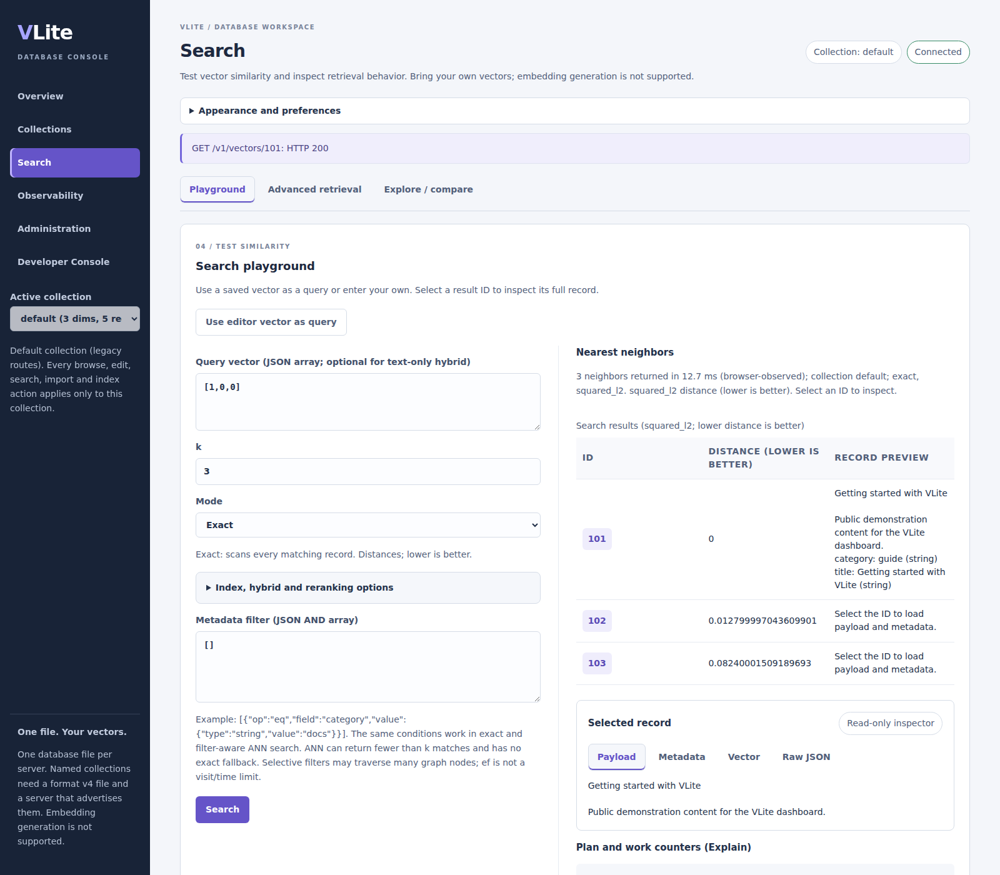
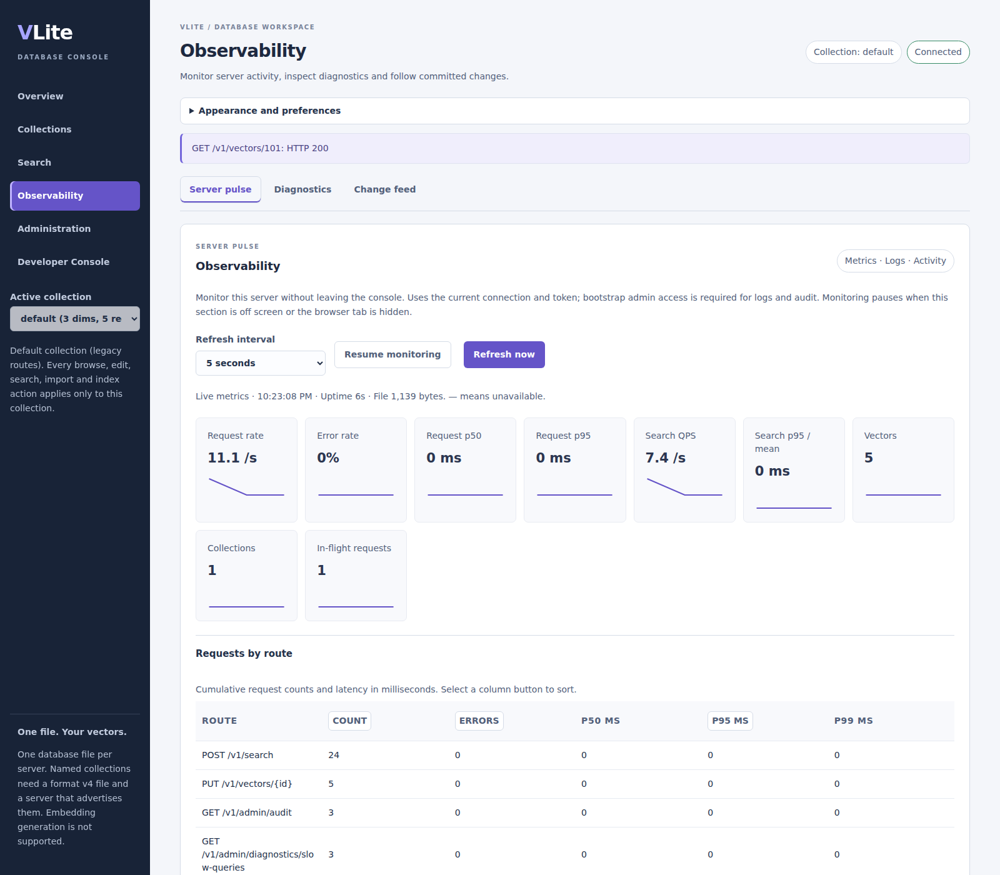

Your database, in focus
Browse collections, inspect records, run vector searches and monitor your VLite server in one web interface.
This is the dashboard product and setup page, not a hosted database or public live console. Run your own instance using the instructions below.
From records to operations
Version 0.4.1 builds include these dashboard updates; older v0.3.0 images do not include every feature. Check release publication before selecting images.
Focused collection workflows
Six workspaces with Records, Write, Search, Index and Settings collection tabs. Use keyboard navigation or the mobile drawer without losing in-page drafts.
Readable record inspection
Separate Payload, Metadata, Vector and Raw JSON panels, bounded previews, typed metadata editing and explicit mutation confirmations.
Search and ingestion
Exact and ANN search, typed filters, validated JSON writes, bounded import/export and copy-as-code. Failed search refreshes retain prior results with an explicit error.
Metrics and live logs
Request/search rates, latency percentiles, route tables, sparklines and filtered JSONL log exports. Global metrics/log views require a bootstrap admin token. Logs are a bounded, memory-only ring, not a durable archive.
A closer look at the workspace
Actual current-source dashboard captures using five synthetic demonstration records in an isolated database. Metrics and timings reflect this small demo session, not a performance benchmark. Select an image to view it at full size.





Run locally from source
Clone the repository and follow the installation guide. From its root, with Docker running, prepare the API configuration and private token using the Docker REST quickstart. Then build both services from the current checkout:
docker compose --profile dashboard up --build -d api dashboardOpen http://localhost:8081 for the standalone UI, or
http://localhost:18084/dashboard for the embedded UI.
Paste your existing .secrets/api-token value into the connection field.
These addresses refer to your own machine and only work after startup.
The standalone frontend proxies authenticated requests to the API; both views use the same database. Tokens stay in page memory and are cleared on reload or Disconnect. Keep the default loopback bindings; use the documented HTTPS deployment before remote access.
The dashboard does not generate embeddings. Writes replace records and require confirmation. Stopping a browser wait does not cancel server work or retry it. For offline workflows, use the VLite CLI tools; stop the server before opening its file with an exclusive-lock tool.